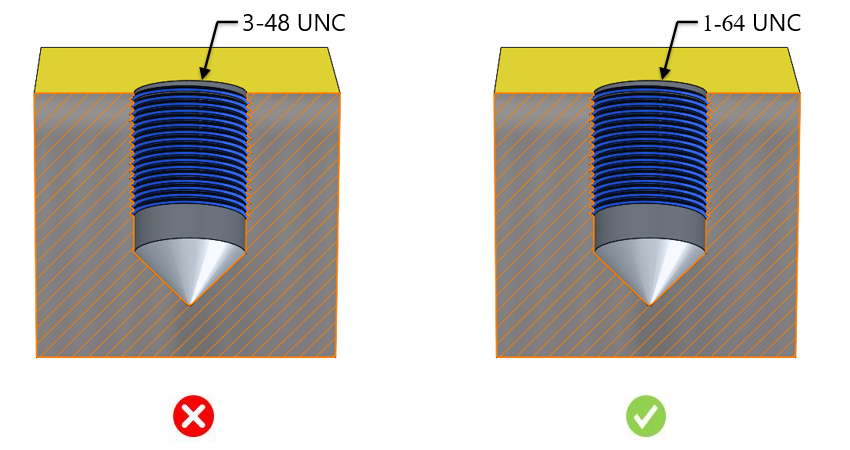

このルールは、CADモデルから非標準のねじサイズを特定します。
工程内での整合性（共通化）を確保できる標準ねじサイズを使用してください。標準ねじサイズを使用することで、正しい組立嵌合が保証され、応力破断に関連する問題を回避できます。このルールでは、組織固有の標準ねじサイズをユーザーが構成することができ、それらはルールファイルに保存され、検証に使用されます。CADモデル内に非標準のねじが存在する場合、このルールは該当するねじサイズに対してエラーを検出します。
工程内での整合性（共通化）を確保でき、組立を容易にする標準ねじサイズを使用してください。
DFMProでは、設計エンジニアが使用すべき組織固有の標準ねじサイズを構成することができます。
